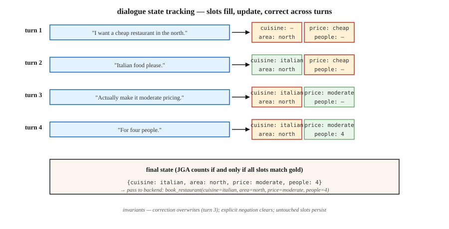

Home / NLP, Foundations to Advanced
Dialogue State Tracking
"I want a cheap restaurant in the north... actually make it moderate... and add Italian." Three turns, three state updates. DST keeps the slot-value dict in sync so the booking works.
- Type
- Build
- Languages
- Python
- Prerequisites
- Phase 5 · 17 (Chatbots), Phase 5 · 20 (Structured Outputs)
- Time
- ~75 minutes
#The Problem
In a task-oriented dialogue system, the user's goal is encoded as a set of slot-value pairs: {cuisine: italian, area: north, price: moderate}. Every user turn can add, change, or remove a slot. The system must read the whole conversation and output the current state correctly.
Get a single slot wrong and the system books the wrong restaurant, schedules the wrong flight, or charges the wrong card. DST is the hinge between what the user said and what the backend executes.
Why it still matters in 2026 despite LLMs:
- Compliance-sensitive domains (banking, healthcare, airline booking) require deterministic slot values, not free-form generation.
- Tool-use agents still need slot resolution before calling APIs.
- Multi-turn correction is harder than it looks: "actually no, make it Thursday."
The modern pipeline: classical DST concepts + LLM extractors + structured-output guardrails.
#The Concept

Task structure. A schema defines domains (restaurant, hotel, taxi) and their slots (cuisine, area, price, people). Each slot can be empty, filled with a value from a closed set (price: {cheap, moderate, expensive}), or a free-form value (name: "The Copper Kettle").
Two DST formulations.
- Classification. For each (slot, candidate_value) pair, predict yes/no. Works for closed-vocab slots. Standard pre-2020.
- Generation. Given the dialogue, generate slot values as free text. Works for open-vocab slots. The modern default.
Metric. Joint Goal Accuracy (JGA) — the fraction of turns where every slot is correct. All-or-nothing. MultiWOZ 2.4 leaderboard tops around 83% in 2026.
Architectures.
- Rule-based (slot regex + keyword). Strong baseline for narrow domains. Debuggable.
- TripPy / BERT-DST. Copy-based generation with BERT encoding. Pre-LLM standard.
- LDST (LLaMA + LoRA). Instruction-tuned LLM with domain-slot prompting. Reaches ChatGPT-level quality on MultiWOZ 2.4.
- Ontology-free (2024–26). Skip the schema; generate slot names and values directly. Handles open domains.
- Prompt + structured output (2024–26). LLM with Pydantic schema + constrained decoding. 5 lines of code, production-ready.
#The classic failure modes
- Co-reference across turns. "Let's stay with the first option." Needs to resolve which option.
- Over-write vs append. User says "add Italian." Do you replace cuisine or append?
- Implicit confirmations. "OK cool" — did that accept the offered booking?
- Correction. "Actually make it 7 pm." Must update time without clearing other slots.
- Coreference to previous system utterance. "Yes, that one." Which "that"?
#Build It
#Step 1: rule-based slot extractor
See code/main.py. Regex + synonym dictionaries cover 70% of canonical utterances in narrow domains:
CUISINE_SYNONYMS = {
"italian": ["italian", "pasta", "pizza", "italy"],
"chinese": ["chinese", "chow mein", "noodles"],
}
def extract_cuisine(utterance):
for canonical, synonyms in CUISINE_SYNONYMS.items():
if any(syn in utterance.lower() for syn in synonyms):
return canonical
return NoneBrittle outside the canonical vocabulary. Works for deterministic slot confirmations.
#Step 2: state update loop
def update_state(state, utterance):
new_state = dict(state)
for slot, extractor in SLOT_EXTRACTORS.items():
value = extractor(utterance)
if value is not None:
new_state[slot] = value
for slot in NEGATION_CLEARS:
if is_negated(utterance, slot):
new_state[slot] = None
return new_stateThree invariants:
- Never reset a slot the user did not touch.
- Explicit negation ("never mind the cuisine") must clear.
- User correction ("actually...") must overwrite, not append.
#Step 3: LLM-driven DST with structured output
from pydantic import BaseModel
from typing import Literal, Optional
import instructor
class RestaurantState(BaseModel):
cuisine: Optional[Literal["italian", "chinese", "indian", "thai", "any"]] = None
area: Optional[Literal["north", "south", "east", "west", "center"]] = None
price: Optional[Literal["cheap", "moderate", "expensive"]] = None
people: Optional[int] = None
day: Optional[str] = None
def llm_dst(history, llm):
prompt = f"""You track the slot values of a restaurant booking across turns.
Dialogue so far:
{render(history)}
Update the state based on the latest user turn. Output only the JSON state."""
return llm(prompt, response_model=RestaurantState)Instructor + Pydantic guarantees a valid state object. No regex, no schema mismatches, no hallucinated slots.
#Step 4: JGA evaluation
def joint_goal_accuracy(predicted_states, gold_states):
correct = sum(1 for p, g in zip(predicted_states, gold_states) if p == g)
return correct / len(predicted_states)Calibrate: what fraction of turns does the system get ALL slots right? For MultiWOZ 2.4, top 2026 systems: 80-83%. Your in-domain system should exceed that on your narrow vocabulary or the LLM baseline beats you.
#Step 5: handling correction
CORRECTION_CUES = {"actually", "no wait", "on second thought", "change that to"}
def is_correction(utterance):
return any(cue in utterance.lower() for cue in CORRECTION_CUES)On a detected correction, overwrite the last-updated slot rather than appending. Hard to get right without LLM help. The modern pattern: always let the LLM regenerate the whole state from history rather than incrementally updating — this naturally handles corrections.
#Pitfalls
- Full-history regeneration cost. Letting the LLM regenerate state each turn costs O(n²) total tokens. Cap history or summarize older turns.
- Schema drift. Adding new slots post-hoc breaks old training data. Version your schema.
- Case sensitivity. "Italian" vs "italian" vs "ITALIAN" — normalize everywhere.
- Implicit inheritance. If the user has previously specified "for 4 people," a new request for a different time should not clear people. Always pass the full history.
- Free-form vs closed-set. Names, times, and addresses need free-form slots; cuisines and areas are closed. Mix both in the schema.
#Use It
The 2026 stack:
| Situation | Approach |
|---|---|
| Narrow domain (one or two intents) | Rule-based + regex |
| Broad domain, labeled data available | LDST (LLaMA + LoRA on MultiWOZ-style data) |
| Broad domain, no labels, prod-ready | LLM + Instructor + Pydantic schema |
| Spoken / voice | ASR + normalizer + LLM-DST |
| Multi-domain booking flow | Schema-guided LLM with per-domain Pydantic models |
| Compliance-sensitive | Rule-based primary, LLM fallback with confirmation flow |
#Ship It
Save as outputs/skill-dst-designer.md:
---
name: dst-designer
description: Design a dialogue state tracker — schema, extractor, update policy, evaluation.
version: 1.0.0
phase: 5
lesson: 29
tags: [nlp, dialogue, task-oriented]
---
Given a use case (domain, languages, vocab openness, compliance needs), output:
1. Schema. Domain list, slots per domain, open vs closed vocabulary per slot.
2. Extractor. Rule-based / seq2seq / LLM-with-Pydantic. Reason.
3. Update policy. Regenerate-whole-state / incremental; correction handling; negation handling.
4. Evaluation. Joint Goal Accuracy on a held-out dialogue set, slot-level precision/recall, confusion on the hardest slot.
5. Confirmation flow. When to explicitly ask the user to confirm (destructive actions, low-confidence extractions).
Refuse LLM-only DST for compliance-sensitive slots without a rule-based secondary check. Refuse any DST that cannot roll back a slot on user correction. Flag schemas without version tags.#Exercises
- Easy. Build the rule-based state tracker in
code/main.pyfor 3 slots (cuisine, area, price). Test on 10 hand-crafted dialogues. Measure JGA. - Medium. Same dataset with Instructor + Pydantic + a small LLM. Compare JGA. Inspect the hardest turns.
- Hard. Implement both and route: rule-based primary, LLM fallback when rule-based emits <2 slots with confidence. Measure the combined JGA and inference cost per turn.
#Key Terms
| Term | What people say | What it actually means |
|---|---|---|
| DST | Dialogue state tracking | Maintain the slot-value dict across dialogue turns. |
| Slot | Unit of user intent | Named parameter the backend needs (cuisine, date). |
| Domain | The task area | Restaurant, hotel, taxi — sets of slots. |
| JGA | Joint Goal Accuracy | Fraction of turns where every slot is correct. All-or-nothing. |
| MultiWOZ | The benchmark | Multi-domain WOZ dataset; standard DST evaluation. |
| Ontology-free DST | No schema | Generate slot names and values directly, no fixed list. |
| Correction | "Actually..." | Turn that overwrites a previously-filled slot. |
#Further Reading
- Budzianowski et al. (2018). MultiWOZ — A Large-Scale Multi-Domain Wizard-of-Oz — the canonical benchmark.
- Feng et al. (2023). Towards LLM-driven Dialogue State Tracking (LDST) — LLaMA + LoRA instruction tuning for DST.
- Heck et al. (2020). TripPy — A Triple Copy Strategy for Value Independent Neural Dialog State Tracking — the copy-based DST workhorse.
- King, Flanigan (2024). Unsupervised End-to-End Task-Oriented Dialogue with LLMs — EM-based unsupervised TOD.
- MultiWOZ leaderboard — canonical DST results.
Nice. That's 4 minutes of NLP, Foundations to Advanced behind you.
Pick the next module →